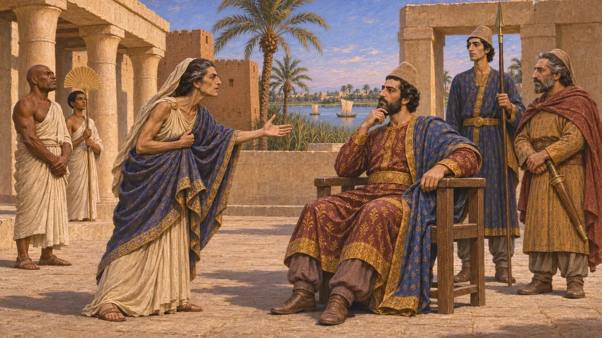
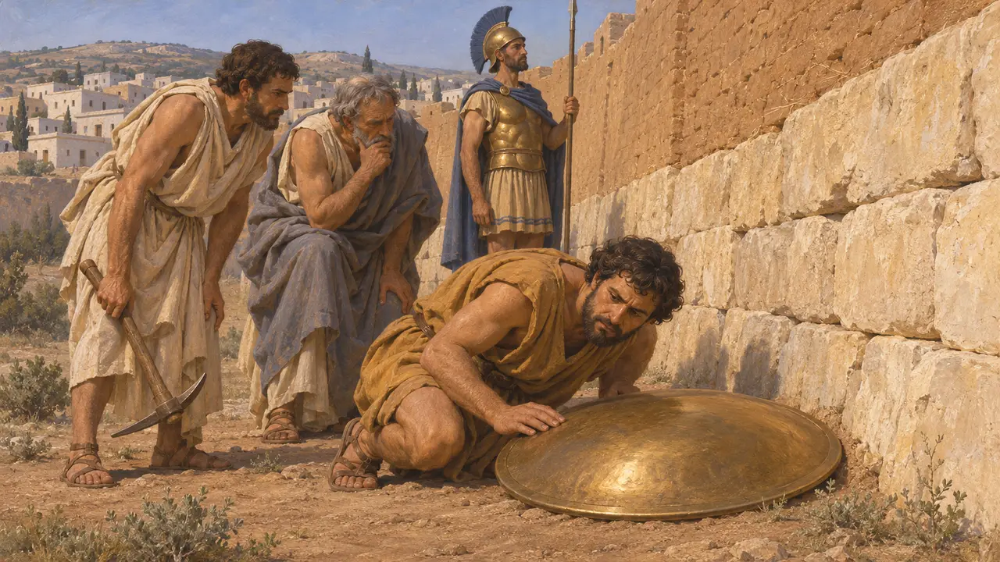
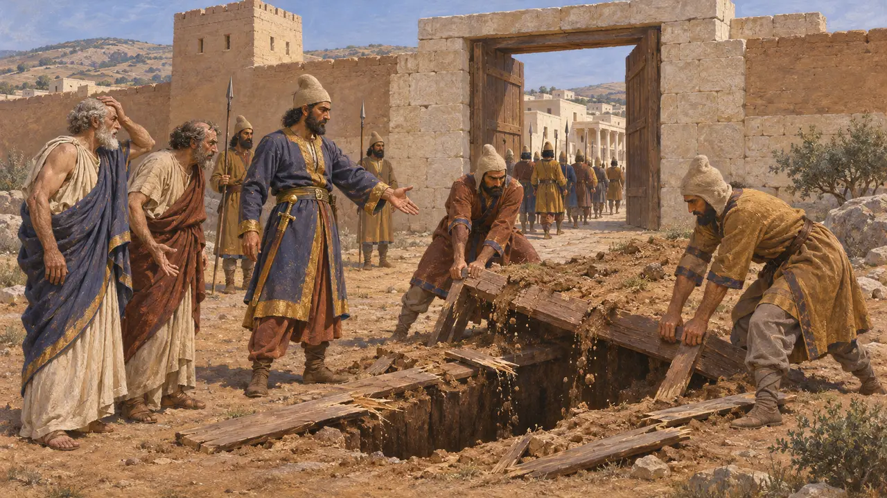
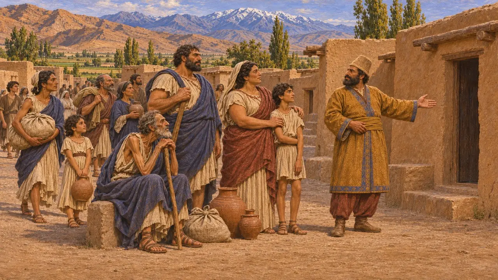
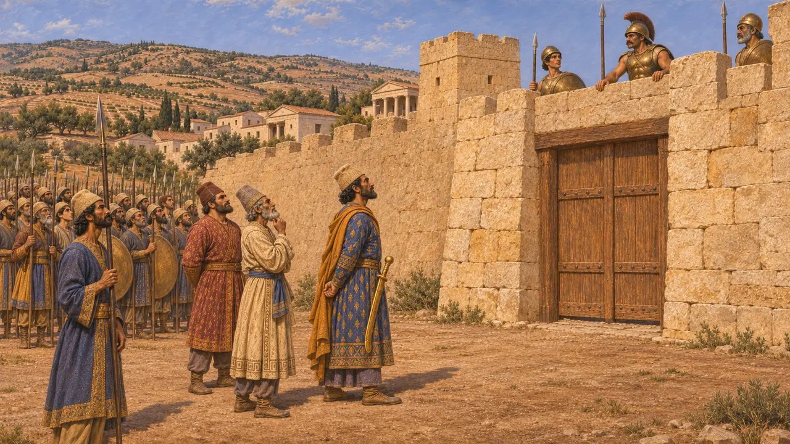

Enzyklopädie › Schlachten und Ereignisse

Die Belagerung von Barka
Persische Belagerung einer griechischen Stadt in der Kyrenaika, Libyen, um 513 v. Chr.
Im Spiel: Level 6: Die Schiffbrücke
Im späten 6. Jahrhundert schickte der persische Satrap von Ägypten ein Heer nach Westen gegen Barka, eine griechische Stadt in Libyen, die 9 Monate lang standhielt. Herodots Bericht über die Belagerung gehört zu den frühesten griechischen Beschreibungen von Stollen unter Stadtmauern und davon, wie man solche Stollen am Geräusch aufspürt. Die Stadt fiel durch eine List, und viele ihrer Bewohner wurden quer durch das Reich nach Baktrien verschleppt.
Im Spiel: Das Spiel zeigt Perser, die Barkas Mauern untertunneln, und einen Schmied, der die Tunnel mit einem klingenden Bronzeschild aufspürt, wie Herodot es erzählt, und führt mit dieser Szene den Minenkrieg ein. Das Datum um 513 v. Chr. ist ungefähr.

Pheretimes Hilfegesuch an Ägypten
Antiker BerichtHerodot berichtet, Arkesilaos III., der König von Kyrene, sei in Barka ermordet worden, und seine Mutter Pheretime sei nach Ägypten geflohen, um den Satrapen Aryandes um Hilfe zu bitten. Aryandes schickte ein Heer unter Amasis, einem Maraphier, und eine Flotte unter Badres von den Pasargaden. Herodot hielt die Rache nur für einen Vorwand und glaubte, das wahre Ziel sei gewesen, die Libyer unter persische Herrschaft zu bringen.
Herodotus 4.164-167

Tunnel, entdeckt durch einen hallenden Schild
Antiker BerichtDie Perser forderten die Mörder des Arkesilaos, und die Barkäer antworteten, die ganze Stadt trage die Schuld gemeinsam. Herodot sagt, die Belagerung habe neun Monate gedauert, mit Angriffen und Tunneln, die auf die Mauern zu gegraben wurden. Ein Bronzeschmied trug innerhalb der Mauern einen Bronzeschild umher und legte ihn auf den Boden, und wo darunter gegraben wurde, klang der Schild. Die Barkäer gruben dort Gegenminen, töteten die Gräber und schlugen die Angriffe zurück.
Herodotus 4.200

Durch einen falschen Eid genommen
Antiker BerichtDa Amasis die Stadt nicht mit Gewalt einnehmen konnte, ließ er bei Nacht einen Graben ausheben und mit Planken und einer Erdschicht bedecken. Über dieser Stelle schwor er, einen Vertrag so lange zu halten, wie der Boden so bliebe, wie er war. Die Barkäer willigten ein, Tribut zu zahlen, und öffneten ihre Tore. Herodot berichtet, die Perser hätten daraufhin die Planken zerbrochen, den Eid für nichtig erklärt und die Stadt genommen, und Pheretime habe die Hauptschuldigen rings um die Mauern pfählen lassen.
Herodotus 4.201-202

Ein neues Barka in Baktrien
Antiker BerichtHerodot berichtet, das Heer sei an Kyrene vorbei zurückmarschiert, habe erwogen, die Stadt einzunehmen, und auf dem Weg nach Ägypten Nachzügler an libysche Plünderer verloren. Die versklavten Barkäer wurden zu Dareios geschickt, der ihnen ein Dorf in Baktrien gab. Sie nannten es Barka, und Herodot sagt, es sei zu seiner eigenen Zeit noch bewohnt gewesen. Ganze Gemeinschaften auf diese Weise umzusiedeln war eine bekannte persische Praxis; die gefangenen Eretrier wurden später in der Nähe von Susa angesiedelt.
Herodotus 4.203-204; Herodotus 6.119

Datierung und Zweck
UmstrittenHerodot legt den Feldzug in dieselbe Zeit wie Dareios' Skythenzug, was auf etwa 513 v. Chr. hindeutet, doch er nennt kein Jahr, und manche Historiker datieren ihn einige Jahre früher oder später. Herodot sagt, die Libyer, Kyrene und Barka hätten sich schon 525 v. Chr. Kambyses unterworfen; Historiker debattieren daher, ob es sich um eine Eroberung oder um die Bestrafung einer aufsässigen Untertanenstadt handelte. Putaya, der persische Name für Libyen, erscheint unter den Ländern des Königs in der Grabinschrift des Dareios.
Herodotus 4.145; Herodotus 3.13; DNa; P. Briant, From Cyrus to Alexander, 2002
Quellen
- Herodotus, Histories 4.145-205
- P. Briant, From Cyrus to Alexander, 2002
- Herodotus 3.13 and 3.91
- DNa (Darius's tomb inscription at Naqsh-e Rostam)
- Herodotus 6.119